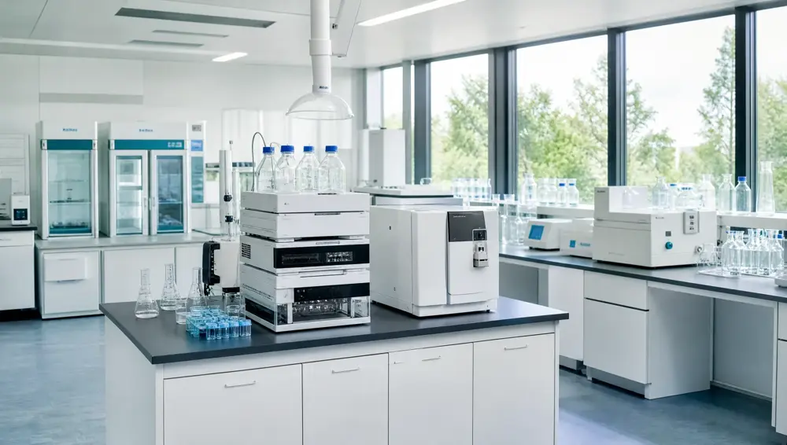

Análises de alimentos com precisão e credibilidade
Desde 2002, análises laboratoriais em microbiologia, microscopia e físico-químico para alimentos, com pontualidade e precisão.
Solicitar orçamento pelo WhatsApp (abre em nova aba)Mogi das Cruzes/SP
Análises laboratoriais
Físico-Químico
controle de qualidade
Ensaios para controle de qualidade dos alimentos.
Microbiologia
controle sanitário
Ensaios para controle sanitário dos alimentos.
Microscopia
composição de alimentos
Ensaios para identificação da composição de alimentos.
Qualidade CETAL
Desde2002
Prestação de serviços em análises laboratoriais de alimentos.
Corpo técnico altamente qualificado
Profissionais qualificados para atender com pontualidade.
Instrumentos analíticos modernos
Tecnologia de ponta para análises com precisão.
Metodologias reconhecidas
Seguindo as tendências do mercado internacional.
Metodologias reconhecidas
nacional e internacionalmente
Fundado em 2002, o CETAL é um laboratório de prestação de serviços em análises físico-químicas, microbiológicas e microscopia.
- Instrumentos analíticos modernos
- Controle de qualidade exigido pelo mercado internacional
- Corpo técnico altamente qualificado

Conteúdos sobre acreditações
Uma seleção de e-books exclusivos para auxiliar o dia a dia da sua empresa a entender melhor o universo de acreditações e análises laboratoriais.
Baixar e-books (abre em nova aba)